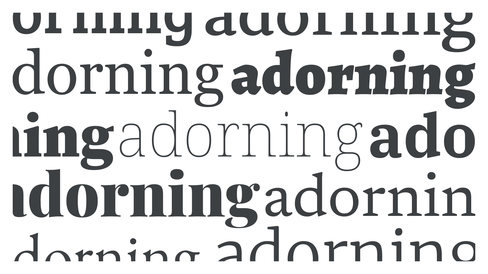

Serif
By Google Fonts Knowledge contributors · Google Fonts Knowledge.
Original article · Source on GitHub · CC BY-SA 4.0. Text, illustrations and existing credits reproduced from the licensed Knowledge repository. Open Shelf adapted the layout and links; these adaptations are also CC BY-SA 4.0. No endorsement implied.
“Serif” refers to either the mark or line that can sometimes appear at the end of a character’s stroke, or the collective name for typefaces that use serifs in their design.

We often refer to serif typefaces simply as “serifs,” but really we’re describing a serif typeface with a design that uses serifs in its letterforms. There are many sub-genres of serif type. For a detailed look at classifications broken down by genre and historical period, please read our article, “Making sense of typographic classifications.”
Examples of serif typefaces include EB Garamond, Merriweather, Noto Serif, Source Serif 4, and Alegreya.